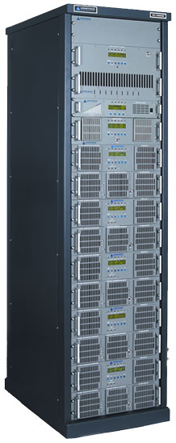

<div class="container">

    <div class="aboutus">
        <div class="row">
            <div class="col-sm-4">
                <div class="centerimage">
                    
                </div>
            </div>
            <div class="col-sm-8">
                <p>
                    Armstrong Transmitter has earned the reputation for building Rock Solid FM Transmitters designed for continuous use and high reliability.

                    Our "T" of single tube, grounded grid transmitters are feature rich and priced to fit any budget.
                </p>
                <p>
                    The STX line of Solid State Transmitters are the most rugged and robust
                    Solid State Transmitters available.
                </p>
                <p>
                    Both our Single Tube design and our Solid State Transmitters are HD Radio*
                    Compatible once linearized.
                </p>
            </div>
        </div>
    </div>
</div><!-- end container div -->